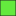

Analyse-Highlights
Gesamtwert
in Punkten

65,20 - 53,29 53,30 - 49,69
53,30 - 49,69 49,70 - 47,19
47,20 - 44,39
 44,40 - 40,99
44,40 - 40,99 41,00 - 37,29
41,00 - 37,29 37,30 - 21,30
37,30 - 21,30Auf dieser Seite wird eine interaktive Karte dargestellt. Für die Hintergrundkarten werden Bilder (Kacheln) benötigt.
Diese Kacheln werden von
OpenStreetMap-Mitwirkende(2026), CARTO(2026), ©2026 Esri und dessen Lizenzgeber
heruntergeladen und in die Karte eingebunden.
Bitte auf OK klicken um die externen Inhalte anzuzeigen und die Karte zu aktivieren.

65,20 - 53,29 53,30 - 49,69 44,40 - 40,99 41,00 - 37,29 37,30 - 21,30